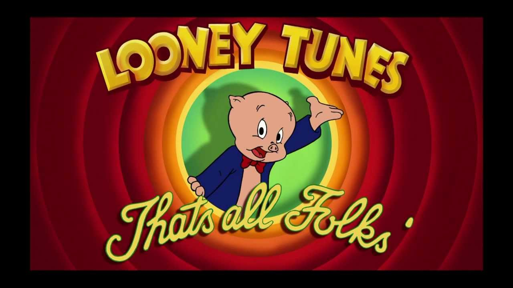

Multiple items
val string : value:'T -> string
Full name: Microsoft.FSharp.Core.Operators.string
--------------------
type string = System.String
Full name: Microsoft.FSharp.Core.string
val string : value:'T -> string
Full name: Microsoft.FSharp.Core.Operators.string
--------------------
type string = System.String
Full name: Microsoft.FSharp.Core.string
Multiple items
val int : value:'T -> int (requires member op_Explicit)
Full name: Microsoft.FSharp.Core.Operators.int
--------------------
type int = int32
Full name: Microsoft.FSharp.Core.int
--------------------
type int<'Measure> = int
Full name: Microsoft.FSharp.Core.int<_>
val int : value:'T -> int (requires member op_Explicit)
Full name: Microsoft.FSharp.Core.Operators.int
--------------------
type int = int32
Full name: Microsoft.FSharp.Core.int
--------------------
type int<'Measure> = int
Full name: Microsoft.FSharp.Core.int<_>
val set : elements:seq<'T> -> Set<'T> (requires comparison)
Full name: Microsoft.FSharp.Core.ExtraTopLevelOperators.set
Full name: Microsoft.FSharp.Core.ExtraTopLevelOperators.set
val exit : exitcode:int -> 'T
Full name: Microsoft.FSharp.Core.Operators.exit
Full name: Microsoft.FSharp.Core.Operators.exit
How Roslyn revitalized .NET Open Source
Filip W

Background
A programming ecosystem is only as strong and healthy, as its open source community.
The difficult stuff
- static/semantic code analysis
- C# development without Visual Studio
- building Visual Studio extensions
- emitting code dynamically
- automation with C#

Low entry barriers
Move Class to File
Roslyn based community OSS projects

Omnisharp
- Intellisense and language services
- Navigation (go to definition, go to implementation, find usages and so on)
- Code Lens ($13k feature)
- Code Issues and refactorings
- Formatting

scriptcs
- One of the most popular community C#/.NET OSS projects in recent years
- Enables rich experience around C# scripting
- contains a C# REPL
- http://scriptcs.net
Script
1: 2: 3: 4: 5: 6: 7: 8: 9: 10: 11: 12: 13: 14: |
|
REPL
1: 2: 3: 4: 5: 6: 7: |
|
Stylecop Analyzers
- An implementation of StyleCop rules using Roslyn
- https://github.com/DotNetAnalyzers/StyleCopAnalyzers

Refactoring Essentials
- A set of analyzers and refactorings that originated from the NRefactory project
- http://vsrefactoringessentials.com
- https://github.com/icsharpcode/refactoringessentials
Code Cracker
- An analyzer library for C# and VB that uses Roslyn to produce refactorings, code analysis, and other cool things
- https://github.com/code-cracker/code-cracker
C# based build tools / task runners
- Cake - runs on Roslyn
- bau - runs on scriptcs
- https://github.com/bau-build/bau
- https://github.com/cake-build/cake
Cake sample (csx file)
1: 2: 3: 4: 5: 6: |
|
Bau sample (csx file)
1: 2: 3: 4: 5: 6: 7: 8: 9: |
|
Rocks
- A mocking library based on Roslyn
- Much easier process than using
System.Reflection.Emit - Able to pregenerate mocks (instead of creating them during test runtime)
- https://github.com/JasonBock/Rocks
Rocks sample
1: 2: 3: 4: 5: 6: 7: 8: 9: 10: 11: |
|
ConfigR
- allows you to use CSX files (C# scripts) to write your project’s configuration
- configuration can be strongly typed
- configuration is no longer purely static (configuration can be an app itself)
- https://github.com/config-r/config-r
CSX config
1:
|
|
Application
1: 2: 3: 4: |
|
LINQPad.CodeAnalysis
- Roslyn syntax tree visualization for LINQPad
- https://github.com/daveaglick/LINQPad.CodeAnalysis

Compilify
- A platform allowing you to execute C# code in the browser
- Any errors/diagnostics will be displayed as you type
- Each snippet can be saved and shared with others via a unique URL
- https://github.com/jrusbatch/compilify
Sky's the limit
